Inference
Several methods are available
Placebo Method. Abadie et al. (2010)
Permutation Tests
References
Abadie, Alberto, Alexis Diamond, and Jens Hainmueller, “Synthetic Control Methods for Comparative Case Studies: Estimating the Effect of California’s Tobacco Control Program,” Journal of the American Statiscal Association, 2010, 105 (490), 493–505.
[21]:
# pip install "panel_exp==0.2.0" --extra-index-url "https://<USER>:<TOKEN>@<REGISTRY>/simple"
[1]:
#pip uninstall panel_exp -y
[22]:
#pip install cvxpy
[1]:
import os
import sys
sys.path.insert(0, os.path.abspath('../../'))
import inspect
import pprint
from panel_exp.panel_data import long_df_to_paneldataset, TimePeriod, PanelDataset
from panel_exp.methods.scm import SyntheticControl, SyntheticControlCVXPY, AugSynth, AugSynthCVXPY
from panel_exp.methods.tbr import TBR, TBRRidge
import pandas as pd
import matplotlib.pyplot as plt
/Users/christopherb/opt/anaconda3/envs/py310/lib/python3.10/site-packages/tqdm/auto.py:21: TqdmWarning: IProgress not found. Please update jupyter and ipywidgets. See https://ipywidgets.readthedocs.io/en/stable/user_install.html
from .autonotebook import tqdm as notebook_tqdm
[2]:
import pandas as pd
data = pd.read_csv('smoking.csv')
[3]:
data.head()
[3]:
| Unnamed: 0 | state | year | cigsale | lnincome | beer | age15to24 | retprice | |
|---|---|---|---|---|---|---|---|---|
| 0 | 1 | Rhode Island | 1970 | 123.900002 | NaN | NaN | 0.183158 | 39.299999 |
| 1 | 2 | Tennessee | 1970 | 99.800003 | NaN | NaN | 0.178044 | 39.900002 |
| 2 | 3 | Indiana | 1970 | 134.600006 | NaN | NaN | 0.176516 | 30.600000 |
| 3 | 4 | Nevada | 1970 | 189.500000 | NaN | NaN | 0.161554 | 38.900002 |
| 4 | 5 | Louisiana | 1970 | 115.900002 | NaN | NaN | 0.185185 | 34.299999 |
[4]:
wide_df = pd.pivot_table(data, index='state', columns='year', values='cigsale', aggfunc=sum, fill_value=0)
/var/folders/cd/dfrqgp4s4ll55cwb7rtgccbw0000gq/T/ipykernel_93698/1112411838.py:1: FutureWarning: The provided callable <built-in function sum> is currently using DataFrameGroupBy.sum. In a future version of pandas, the provided callable will be used directly. To keep current behavior pass the string "sum" instead.
wide_df = pd.pivot_table(data, index='state', columns='year', values='cigsale', aggfunc=sum, fill_value=0)
[5]:
# wide_df
[6]:
from panel_exp.inference.placebo import placebo
[7]:
pds = long_df_to_paneldataset(data, "year", "state", "cigsale", ["California" ], [1988 ])
[8]:
pds.plot_line()
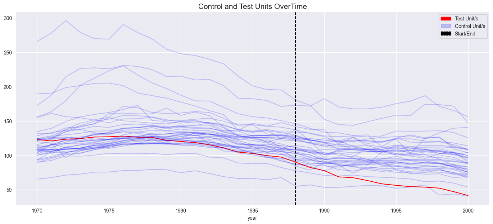
[9]:
pds.plot_scatter(agg_func='mean')
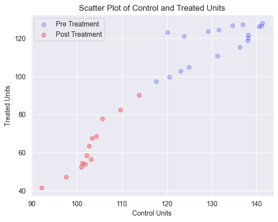
[10]:
scm = SyntheticControl()
[11]:
scm.run_analysis(pds)
[12]:
scm.plot()
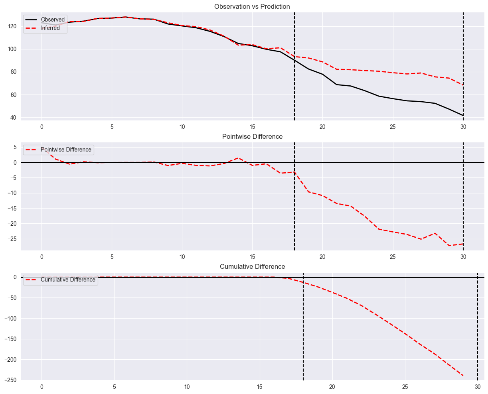
[13]:
scm.summary()
[13]:
| Average | Cumulative | |
|---|---|---|
| Actual | 64.391667 | 772.700001 |
| Predicted | 82.131102 | 985.57323 |
| Absolute Effect | -17.739436 | -212.873229 |
| Relative Effect | -21.598926 | -21.598926 |
Placebo Method
The first method is called the Placebo method and is related to the permutation framework of inference.
The basic idea is that we start a loop around all of the control units. These are units where no intervention happened. In each iteration of the loop, we treat a control unit as if it were the treated unit i.e. create a synthetic control and predict a counterfactual.
In the graph below, we can see this method in action. The gray lines are “plaebo units” i.e. units that had no intervention, but we treated as if they were. We can then see the estimated effect for each of these units. We can compare this against the actual treated unit/s. If the difference in post-treatment effects between the placebo and treated units are large, we interpret this as evidence that the intervention did have an effect.
Not only that, this procedure assumes a random assignment of the intervention, which is hard to believe for this kind of policy intervention (see Abadie, 2021)
[14]:
p_value, rj, dfr = placebo(pds, SyntheticControl, plot_1=True, plot_2=False, penalty='l2')
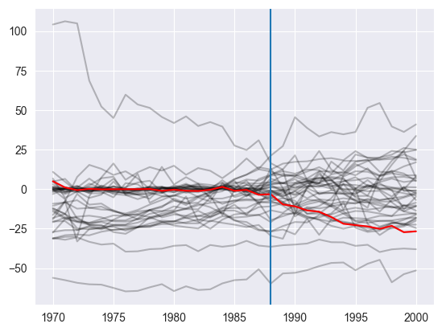
In this method, you may notice that some of the placebo units have poor pre-treated fit. There are a couple ways to handle this. First, we can heuristically trim the placebos units to only include matches that have a similar pre-treatment fit as the treated unit.
[15]:
# Implement that here
Another approach is to take the ratio of pre-treatment MSE and post-treatment MSE to create an index illustrating how much of an effect the treatment had on the treated and placebo units. For example, if a unit had a good pre and post treatment fit the ratio will be close to one, inversely if a unit had a poor pre and post treatement fit the ratio will also be close to one. When the ratio grows larger it means an and effect is being observed. We can then compare the ratios of placebo units and treated units and calculate a p-value.
[16]:
p_value, rj, dfr = placebo(pds, SyntheticControl, plot_1=False, plot_2=True, penalty='l2')
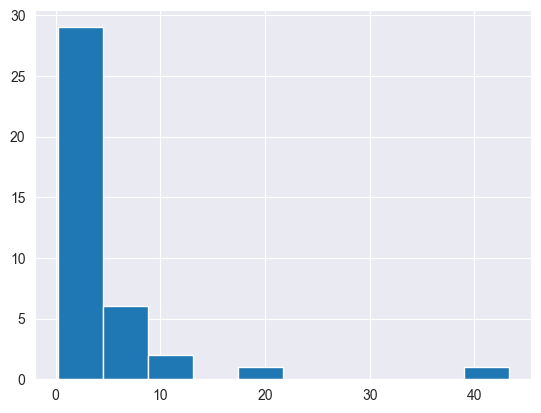
Conformal Inference
Loop through the treated units. For each unit: Loop through the treated time periods. For each time period loop through a set of null hypothesis.
While Conformal Inference is proven to be robust in many scenarios, it is not guaranteed to work everytime. Most commonly, Conformal Inference can fail when
there is not enough days in the Pre-Treatment Period the true impact (called in the paper as Shock Sequence Ut) is not stationary or not weakly dependent the data is not stationary and not weakly dependent when our model is misspecified or inconsistent
Not exactly the same as reference this is because of the optimizer – just an example of the sensitivity of some of the methods.
Below, we run with the optimizer from the example.
[17]:
scm_conformal = SyntheticControlCVXPY(inference="Conformal")
scm_conformal.run_analysis(pds)
scm_conformal.plot()
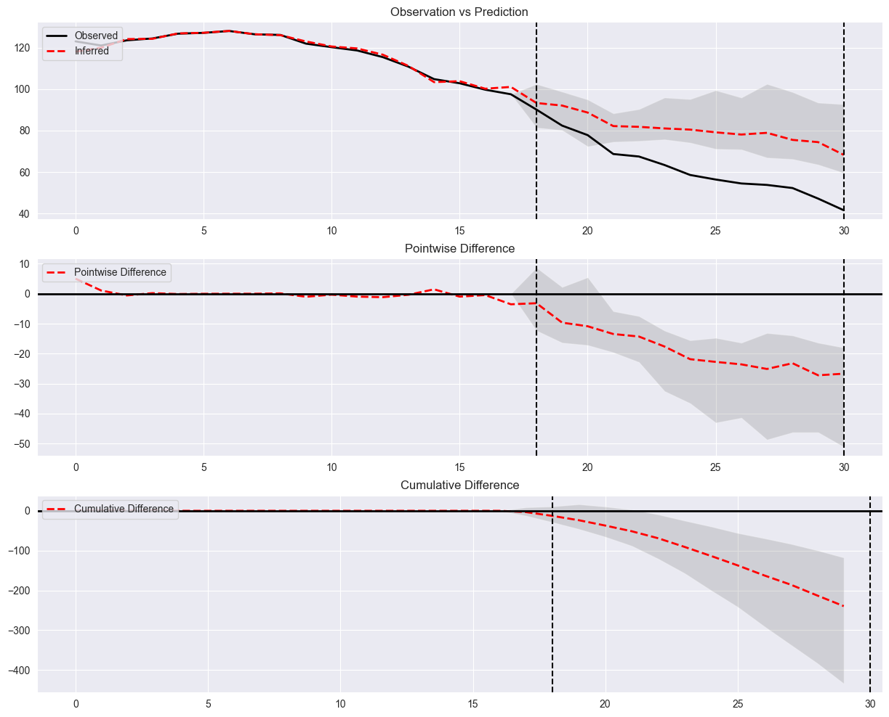
[ ]:
K-Fold
[18]:
scm_fold = SyntheticControlCVXPY(inference="Kfold")
scm_fold.run_analysis(pds)
scm_fold.plot()
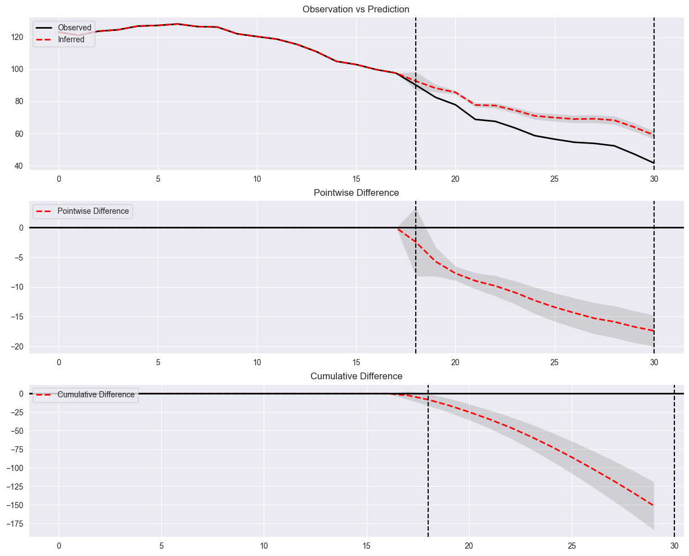
[19]:
ascm_conformal = AugSynth(inference="Conformal")
ascm_conformal.run_analysis(pds)
ascm_conformal.plot()
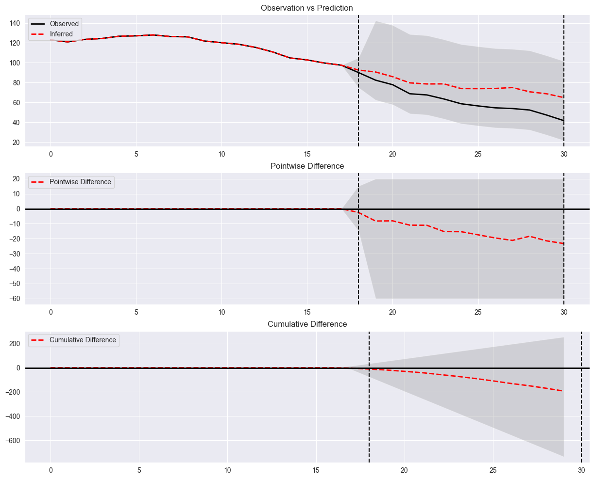
[20]:
ascm_fold = AugSynth(inference="Kfold")
ascm_fold.run_analysis(pds)
ascm_fold.plot()
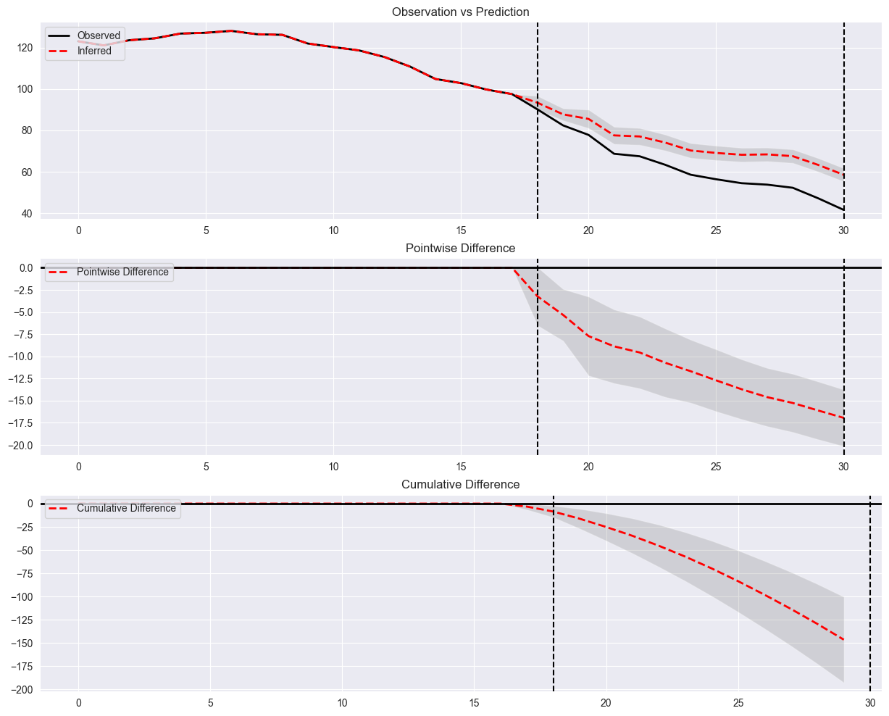
[21]:
# TBR
tbr_conformal = TBRRidge(inference="Conformal")
tbr_conformal.run_analysis(pds)
tbr_conformal.plot()
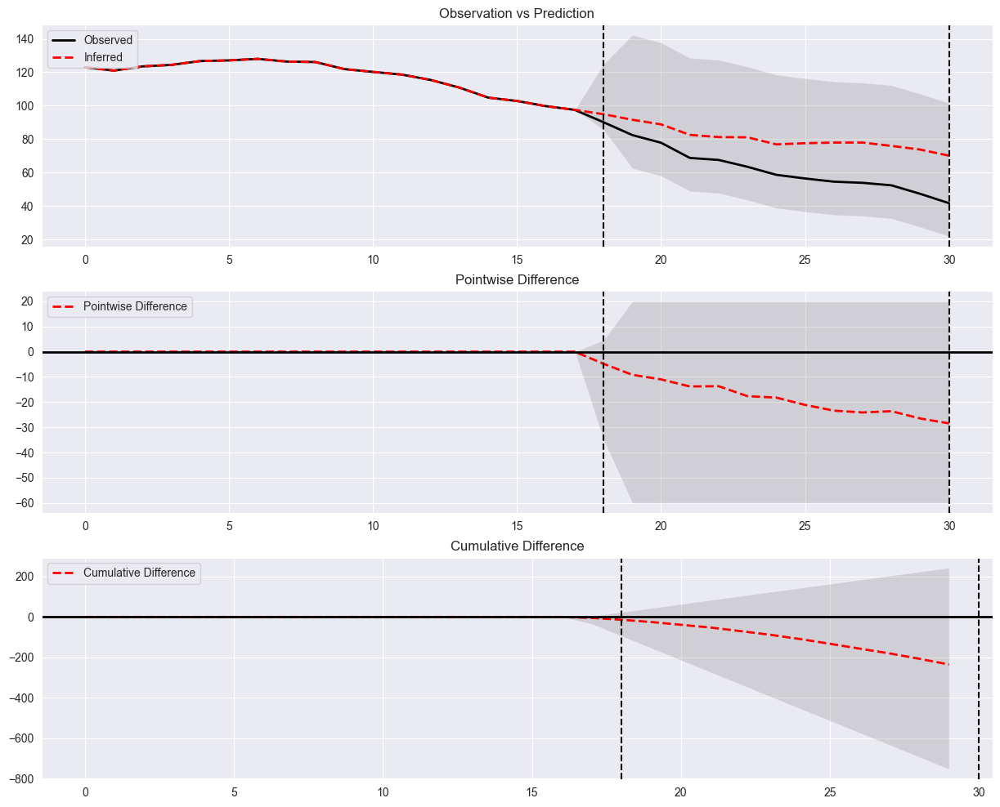
[22]:
tbr_kfold = TBRRidge(inference="Kfold")
tbr_kfold.run_analysis(pds)
tbr_kfold.plot()
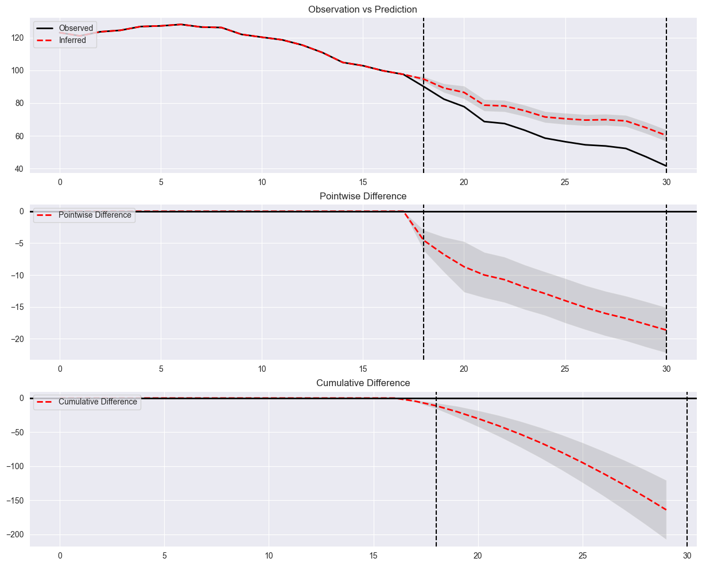
[ ]:
[92]:
import matplotlib.pyplot as plt
def plot_many_dist(dists):
fig, ax = plt.subplots() # Create a figure and axes object
for dist in dists:
lower_90, mean, upper_90 = dist
std_dev = (upper_90 - lower_90) / (2 * 1.645) # 1.645 is the z-score for 90% confidence interval
x = np.linspace(lower_90 - 3*std_dev, upper_90 + 3*std_dev, 1000)
y = (1/(std_dev * np.sqrt(2 * np.pi))) * np.exp(-0.5 * ((x - mean) / std_dev)**2)
ax.plot(x, y, label=get_variable_name(dist)) # Use the axes object to plot on the same figure
ax.set_xlabel('Value')
ax.set_ylabel('Probability Density')
ax.set_title('Distribution Plot with 90% Prediction Interval')
ax.legend() # Add a legend to differentiate the distributions
fig.show()
[93]:
tbr_kfold_dist = [tbr_kfold.low_cumulative_diff[-1], tbr_kfold.cumulative_diff[-1], tbr_kfold.high_cumulative_diff[-1]]
scm_fold_dist = [scm_fold.low_cumulative_diff[-1], scm_fold.cumulative_diff[-1], scm_fold.high_cumulative_diff[-1]]
scm_conformal_dist = [scm_conformal.low_cumulative_diff[-1], scm_conformal.cumulative_diff[-1], scm_conformal.high_cumulative_diff[-1]]
ascm_fold_dist = [ascm_fold.low_cumulative_diff[-1], ascm_fold.cumulative_diff[-1], ascm_fold.high_cumulative_diff[-1]]
ascm_conformal_dist = [ascm_conformal.low_cumulative_diff[-1], ascm_conformal.cumulative_diff[-1], ascm_conformal.high_cumulative_diff[-1]]
[94]:
plot_many_dist([tbr_kfold_dist, scm_fold_dist, scm_conformal_dist, ascm_fold_dist, ascm_conformal_dist])
---------------------------------------------------------------------------
TypeError Traceback (most recent call last)
/Users/christopherb/Documents/p4/p3/panel_exp/docs/source/inference.ipynb Cell 38 line 1
----> <a href='vscode-notebook-cell:/Users/christopherb/Documents/p4/p3/panel_exp/docs/source/inference.ipynb#Y256sZmlsZQ%3D%3D?line=0'>1</a> plot_many_dist([tbr_kfold_dist, scm_fold_dist, scm_conformal_dist, ascm_fold_dist, ascm_conformal_dist])
/Users/christopherb/Documents/p4/p3/panel_exp/docs/source/inference.ipynb Cell 38 line 1
<a href='vscode-notebook-cell:/Users/christopherb/Documents/p4/p3/panel_exp/docs/source/inference.ipynb#Y256sZmlsZQ%3D%3D?line=7'>8</a> x = np.linspace(lower_90 - 3*std_dev, upper_90 + 3*std_dev, 1000)
<a href='vscode-notebook-cell:/Users/christopherb/Documents/p4/p3/panel_exp/docs/source/inference.ipynb#Y256sZmlsZQ%3D%3D?line=8'>9</a> y = (1/(std_dev * np.sqrt(2 * np.pi))) * np.exp(-0.5 * ((x - mean) / std_dev)**2)
---> <a href='vscode-notebook-cell:/Users/christopherb/Documents/p4/p3/panel_exp/docs/source/inference.ipynb#Y256sZmlsZQ%3D%3D?line=9'>10</a> ax.plot(x, y, label=get_variable_name(dist)) # Use the axes object to plot on the same figure
<a href='vscode-notebook-cell:/Users/christopherb/Documents/p4/p3/panel_exp/docs/source/inference.ipynb#Y256sZmlsZQ%3D%3D?line=11'>12</a> ax.set_xlabel('Value')
<a href='vscode-notebook-cell:/Users/christopherb/Documents/p4/p3/panel_exp/docs/source/inference.ipynb#Y256sZmlsZQ%3D%3D?line=12'>13</a> ax.set_ylabel('Probability Density')
TypeError: get_variable_name() missing 1 required positional argument: 'local_vars'
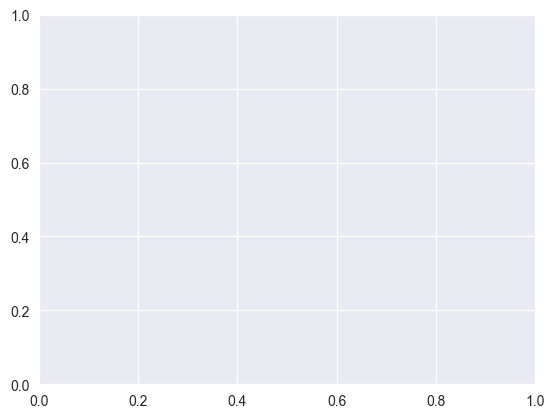
[66]:
import inspect
def get_variable_name(var):
frame = inspect.currentframe().f_back
variables = frame.f_locals.items()
return [name for name, value in variables if value is var]
def get_variable_name(var):
frame = inspect.currentframe().f_back
variables = frame.f_locals.items()
return [name for name, value in variables if value is var]
[70]:
import matplotlib.pyplot as plt
import numpy as np
import inspect
def get_variable_name(var, local_vars):
return [name for name, value in local_vars.items() if value is var]
def plot_many_dist(dists):
fig, ax = plt.subplots() # Create a figure and axes object
frame = inspect.currentframe().f_back
local_vars = frame.f_locals
for dist in dists:
lower_90, mean, upper_90 = dist
std_dev = (upper_90 - lower_90) / (2 * 1.645) # 1.645 is the z-score for 90% confidence interval
x = np.linspace(lower_90 - 3*std_dev, upper_90 + 3*std_dev, 1000)
y = (1/(std_dev * np.sqrt(2 * np.pi))) * np.exp(-0.5 * ((x - mean) / std_dev)**2)
variable_name = get_variable_name(dist, local_vars)
ax.plot(x, y, label=variable_name[0] if variable_name else 'Unknown') # Use the axes object to plot on the same figure
ax.set_xlabel('Value')
ax.set_ylabel('Probability Density')
ax.set_title('Distribution Plot with 90% Prediction Interval')
ax.legend() # Add a legend to differentiate the distributions
plt.show()
[34]:
tbr_kfold.results['y_lower']
[34]:
array([123. , 121. , 123.5 , 124.40000153,
126.69999695, 127.09999847, 128. , 126.40000153,
126.09999847, 121.90000153, 120.19999695, 118.59999847,
115.40000153, 110.80000305, 104.80000305, 102.80000305,
99.69999695, 97.5 , 96.27745943, 91.9451492 ,
90.49214637, 82.28969746, 81.81409592, 78.8252443 ,
74.9493371 , 73.93404275, 73.08285427, 73.35515144,
72.6378176 , 68.51110051, 63.81235092])
[ ]:
[ ]:
[ ]:
[ ]:
How does aggregating control units affect inference methods?
[31]:
from panel_exp.methods.bayesian_regression import BayesianTBR
from panel_exp.methods.tbr import TBR, TBRRidge
[75]:
pds
[75]:
Panel Dataset Summary
---------------------
Number of time points: 31
Number of units: 39
Number of treated units: 1
Treated units: ['California']
Treated periods: [TimePeriod(start=1988, end=None)]
[37]:
t = pds.treated_series()
c = pds.control_series().mean(axis=0)
[54]:
df = pd.concat([pds.treated_series(), pd.DataFrame(pds.control_series().mean(axis=0)).T]).rename({'California':'Treated', 0: 'Control'})
[56]:
pds = PanelDataset(df, [TimePeriod(start=1988, end=2000)], ['Treated'])
[69]:
btbr = BayesianTBR()
[70]:
btbr.run_analysis(pds)
sample: 100%|██████████| 4000/4000 [00:29<00:00, 136.81it/s, 1023 steps of size 4.85e-03. acc. prob=0.94]
[71]:
btbr.plot()
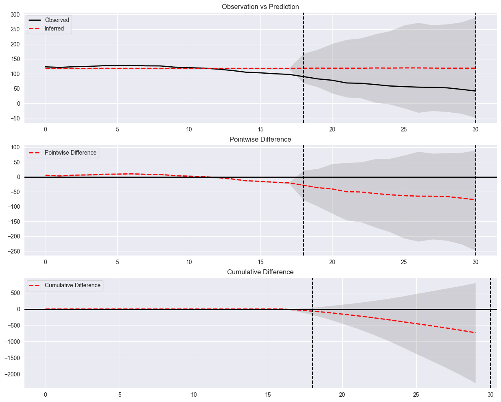
[ ]:
[ ]:
[ ]:
[ ]:
[ ]:
[ ]: